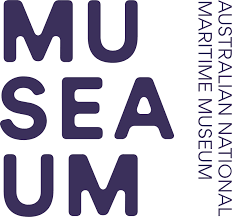

This overview is based on this XML output of the GLAMorous tool d.d. 14-03-2024.
It was generated using the GLAMorousToHTML code.
Also see the documentation of this tool.
This data is also available as an Excel file. More structured data formats (csv, json) will be added in the future.
Available languages
English (141)
German (30)
French (25)
Italian (12)
Spanish (12)
Russian (9)
Czech (6)
Hebrew (5)
Persian (5)
Portuguese (5)
Arabic (4)
Chinese (4)
Indonesian (4)
Japanese (4)
Swedish (4)
Hungarian (3)
Malay (3)
Ukrainian (3)
Welsh (3)
Catalan (2)
Egyptian Arabic (2)
Esperanto (2)
Polish (2)
Standard Estonian (2)
Thai (2)
Vietnamese (2)
Afrikaans (1)
Azerbaijani (1)
Belarusian (1)
Bulgarian (1)
Cebuano (1)
Chuvash (1)
Danish (1)
Dutch (1)
Georgian (1)
Interlingua (1)
Nynorsk (1)
Romanian (1)
Serbian (1)
Slovene (1)
Swahili (1)
Turkish (1)
English (141)
1908_in_Australia |
1920s_in_Western_fashion |
1924_in_Australia |
1929_in_Australia |
1930_in_Australia |
1930s |
1952_in_Australia |
1954_in_Australia |
Aberdeen_Angus |
Akarana |
Albert_B._Randall |
Australian_National_Antarctic_Research_Expeditions |
Bank_Line |
Baragoola |
Bathurst,_New_South_Wales |
Binngarra |
Boatswain |
Bongaree,_Queensland |
Boydtown,_New_South_Wales |
Brian_Abbot |
Burns_Philp |
Burrell_&_Son |
Chief_Secretary's_Building |
Chilean_corvette_General_Baquedano_(1898) |
Coastal_coal-carrying_trade_of_New_South_Wales |
Court_Line |
Cunard-White_Star_Line |
Dalgety_plc |
Dee_Why-class_ferry |
Dundonald_(ship) |
Edmund_Root |
Enmore_Theatre |
Ernest_Marks |
Fairlight_(ferry) |
Felix_von_Luckner |
Frank_Jenner |
Galápagos_Islands |
Grafton_Bond_Store |
Greycliffe_disaster |
HMAS_Albatross_(1928) |
HMAS_Burra_Bra |
HMAS_Cape_Leeuwin |
HMAS_Stuart_(D00) |
HMAS_Torrens_(D67) |
HMHS_China |
HMS_Archer_(D78) |
HMS_Belleisle_(1795) |
HMS_Cheshire |
HMS_Havock_(H43) |
HMS_J1 |
HMS_New_Zealand_(1911) |
HNLMS_Van_Ghent_(1926) |
Hereward_(ship) |
Heritage_gardens_in_Australia |
History_of_Seychelles |
Hold_(compartment) |
Iloura_Reserve |
Impacts_of_tourism |
Imperial_Trans-Antarctic_Expedition |
Italian_cruiser_Bartolomeo_Colleoni |
Italian_submarine_Gondar |
James_A._FitzPatrick |
John_Fell_(industrialist) |
John_Plunkett |
John_Wright_and_Son_Shipyards |
Kainan_Maru_(Antarctic_expedition_ship) |
Kalang |
Karingal_(ferry) |
Kirrule-type_ferry |
Kookooburra |
Koree |
List_of_Cunard_Line_ships |
List_of_Sydney_Harbour_ferries |
List_of_White_Star_Line_ships |
List_of_clipper_ships |
List_of_frigates_of_India |
List_of_governors_of_Guam |
List_of_oldest_surviving_ships |
List_of_passenger_ships_built_in_the_United_States |
List_of_ships_built_by_Harland_and_Wolff_(1859-1929) |
List_of_shipwrecks_in_1898 |
List_of_shipwrecks_in_1927 |
List_of_shipwrecks_in_1930 |
List_of_shipwrecks_in_1931 |
MV_Aorangi_(1924) |
Malabar,_New_South_Wales |
Malabar_Headland |
Manly_Beach |
Manly_Life_Saving_Club |
Manunda |
Mast_(sailing) |
Mersey_(1894_ship) |
Mort's_Dock |
Mystery_Island_(1937_film) |
North_Coast_Steam_Navigation_Company |
PS_Herald |
Polly_Woodside |
RMS_Andes_(1939) |
RMS_Caronia_(1947) |
RMS_Franconia_(1922) |
RMS_Niagara |
RMS_Orama_(1911) |
RMS_Tahiti |
Redcliffe,_Queensland |
Rembrandt_lighting |
Richardson,_Duck_and_Company |
Rock_Davis |
Rodney_disaster |
SMS_Möwe_(1879) |
SS_Canonbar |
SS_Cathay_(1924) |
SS_Ceramic |
SS_Dongola |
SS_Indarra |
SS_Lurline_(1932) |
SS_Makambo |
SS_Megantic |
SS_Moresby_(1881) |
SS_Pennington_Court |
SS_Port_Nicholson_(1918) |
SS_Shinyō_Maru |
SS_Sophocles_(1921) |
SS_Statendam_(1924) |
SS_Testbank |
SS_Themistocles_(1911) |
Service_Dress_(British_Army) |
Shaw,_Savill_&_Albion_Line |
Shell_plc |
Sixty-miler |
Solicitor_General_for_New_South_Wales |
Sunbeam_(steam_yacht) |
Sydney_Cove_railings |
Sydney_K-class_ferry |
TSS_Maianbar |
Timeline_of_Sydney_Harbour_ferries |
Tourism_on_the_Great_Barrier_Reef |
Treasury_Building,_Brisbane |
United_Australia_Party |
Urban_renewal_in_Sydney |
White_Star_Line |
Workwear
German (30)
18-foot_Skiff |
Asturias_(Schiff,_1908) |
Australia_(Schiff,_1913) |
Ballarat_(Schiff) |
Bartolomeo_Colleoni_(Schiff) |
Borda_(Schiff,_1914) |
Ceramic |
China_(Schiff,_1896) |
Felix_Graf_von_Luckner |
Franconia_(Schiff,_1923) |
Handhaken |
Lorenz_Peters |
Makambo_(Schiff) |
Maloja_(Schiff,_1923) |
Manunda_(Schiff) |
Megantic_(Schiff) |
Mongolia_(Schiff,_1923) |
Möwe_(Schiff,_1880) |
Möwebucht |
Nautilus_(Schiff,_1873) |
Niagara_(Schiff,_1913) |
Oronsay_(Schiff,_1925) |
Persic |
Seekrieg |
Shell_plc |
Stauerei |
Strathaird |
Strathnaver_(Schiff) |
USS_Colorado_(BB-45) |
Van_Ghent
French (25)
1924_en_Australie |
Astor_(voilier) |
Bartolomeo_Colleoni_(croiseur) |
Cinéma_sonore |
Combishort |
Conception_(Seychelles) |
Felix_von_Luckner |
Gabier |
Gondar_(sous-marin) |
HMAS_Albatross_(1928) |
HMS_Dauntless_(D45) |
HNLMS_Van_Ghent_(1926) |
Hauban_(voilier) |
Hisser |
Histoire_des_Juifs_en_Australie |
MV_Baragoola |
Morna_(voilier) |
Niagara_(paquebot,_1912) |
Paquebot_transpacifique |
Polly_Woodside |
S.S._Port_Nicholson |
SMS_Möwe_(1879) |
Seul_autour_du_monde_sur_un_voilier_de_onze_mètres |
Tahiti_(paquebot) |
Élevage_bovin_en_Australie
Italian (12)
Dreyer_table |
Esodo_giuliano_dalmata |
HMS_Archer_(D78) |
Hereward_(clipper) |
Iwate_(incrociatore) |
James_A._FitzPatrick |
RMS_Franconia_(1922) |
Risiera_di_San_Sabba |
Sedov_(veliero) |
Toscana_(transatlantico) |
USS_Astoria_(CA-34) |
Vought_UO
Spanish (12)
Annette_Kellerman |
Club_Almirante_Brown |
Cunard_Line |
Cunard_White_Star_Line |
Desarraigo |
El_último_grumete_de_la_Baquedano |
Estadio_Fragata_Presidente_Sarmiento |
Felix_von_Luckner |
RMS_Caronia_(1948) |
SS_Ceramic |
SS_Lurline_(1932) |
Ted_Briggs
Russian (9)
Вуаль |
Матрос |
Мода_1910-х_годов |
Морской_музей_(Мельбурн) |
Ниагара_(лайнер) |
Памир_(барк) |
Свадебный_букет |
Слэй,_Гарольд_Крофтон |
Тяжёлые_крейсера_типа_«Кент»
Czech (6)
David_Moore_(australský_fotograf) |
HMAS_Albatross |
HMAS_Australia_(1911) |
Jeanne_d'Arc_(1928) |
Sam_Hood |
Třída_E_(1912)
Hebrew (5)
אה"מ_ניו_זילנד_(1911) |
אופנה_במדינות_המערב_בשנים_1930–1945 |
ג'ושוע_סלוקום |
משלחת_החקר_האנטארקטית_הלאומית_של_אוסטרליה |
שנות_ה-30_של_המאה_ה-20
Persian (5)
اساس_ماکامبو |
تیاساس_منبار |
لباس_کار |
پیامدهای_گردشگری |
کاینان_مارو
Portuguese (5)
Bartolomeo_Colleoni_(cruzador) |
Grupo_do_Mar_de_Ross |
HMAS_Canberra_(D33) |
Lista_de_cruzadores_da_Austrália |
RMS_Franconia_(1922)
Arabic (4)
1929_في_أستراليا |
البعثة_الإمبراطورية_العابرة_للقارة_القطبية_الجنوبية |
برايان_أبوت |
قانون_الأسرة
Chinese (4)
女式運動裝 |
康塞普申島_(塞舌爾) |
桅杆 |
連身短褲
Indonesian (4)
Organisasi_Internasional_untuk_Migrasi |
Serang_(jabatan) |
Shell_(perusahaan) |
Tiang_kapal
Japanese (4)
スチュアート_(駆逐艦) |
バルトロメオ・コレオーニ_(軽巡洋艦) |
赤道祭 |
軍服_(フランス)
Swedish (4)
M/S_Yngaren |
Pamir_(fartyg) |
Sax_(lyftanordning) |
Spray_(segelfartyg)
Hungarian (3)
SMS_Emden_(1908) |
SS_Port_Nicholson |
U–87
Malay (3)
Bangunan_Ketua_Setiausaha |
Malabar,_New_South_Wales |
Shell_plc
Ukrainian (3)
Весільний_букет |
Список_найбільших_суден_та_кораблів_потоплених_U-Boot |
Фелікс_фон_Люкнер
Welsh (3)
Rhestr_o_bobl_a_anwyd_yng_Ngweriniaeth_Iwerddon |
Shelton,_Connecticut |
Song_of_Mexico
Catalan (2)
Guerra |
Època_victoriana
Egyptian Arabic (2)
برايان_ابوت |
چيمس_اى._فيتزپاتريك
Esperanto (2)
Aŭstralio_en_la_Somera_Olimpiko_1920 |
Aŭstralio_en_la_Somera_Olimpiko_1924
Polish (2)
James_A._Fitzpatrick |
Life_saving_reel
Standard Estonian (2)
Ceramic_(laev_1913) |
Madrus
Thai (2)
คูนาร์ดไลน์ |
คูนาร์ด–ไวต์สตาร์ไลน์
Vietnamese (2)
Cột_(tàu_thuyền) |
Thủ_tướng_Úc
Afrikaans (1)
Impakte_van_toerisme
Azerbaijani (1)
İmperial_Trans-Antarktika_ekspedisiyası
Belarusian (1)
Літоўцы
Bulgarian (1)
Тежки_крайцери_тип_„Кент“
Cebuano (1)
Adelus
Chuvash (1)
Килйыш_тивĕç-ирĕкĕ
Danish (1)
Bådsmand
Dutch (1)
Pamir_(schip,_1905)
Georgian (1)
იმპერიის_ტრანსანტარქტიკული_ექსპედიცია
Interlingua (1)
Annos_1930
Nynorsk (1)
SS_«Port_Nicholson»
Romanian (1)
Listă_de_oameni_din_statul_Connecticut
Serbian (1)
Обданиште
Slovene (1)
SS_Makambo
Swahili (1)
SMS_Möwe
Turkish (1)
Gemi_direği